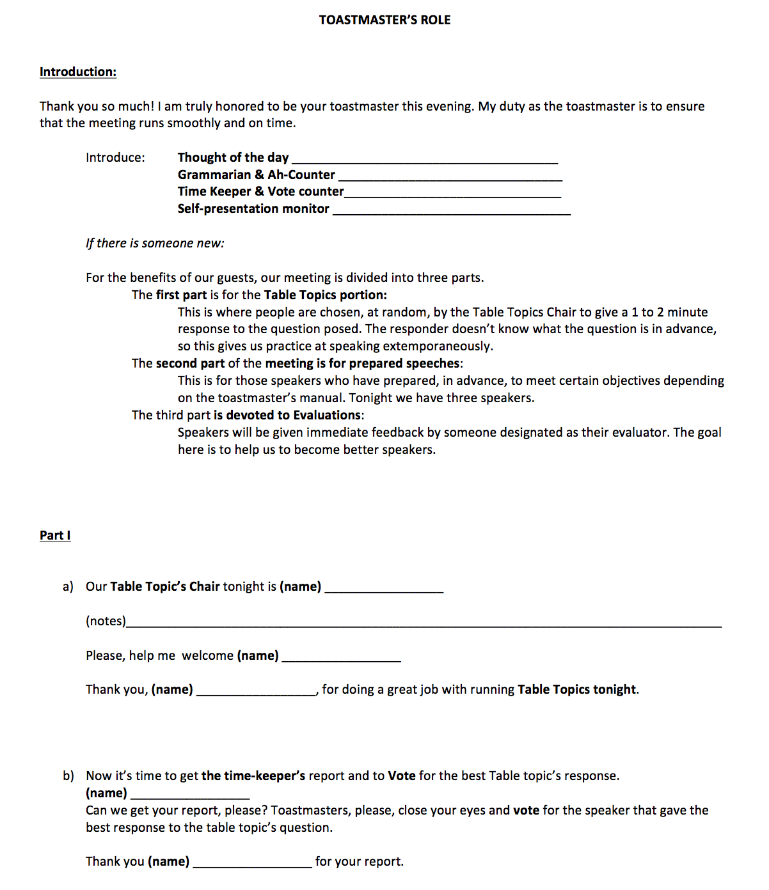

<!-- Main -->
	<div id="main" class="wrapper style1">
		<div class="container">
			<section>
				<p align="center"></p>
				<div class="10u -1u">
					<header class="major">
						<!-- <h2>Blog</h2> -->
						<!-- <span class="byline">Integer sit amet pede vel arcu aliquet pretium</span> -->
					</header>
					<h2>Summary of the Role</h2>
					<ul>
						<li>The Toastmaster is a meeting's director and host.</li><br>
						<i><font color="green"><b>Before the meeting:</b></font></i><br>
						<li>Contact scheduled speakers and members assigned meeting roles to ensure that they are aware of their responsibilities and to obtain speech titles for speakers</li>
						<li>Remind each speaker to get in touch with their respective evaluator to share their personal objectives besides the speech objectives. </li>
						<li>Prepare a short introduction based on speaker's interesting facts in the Jobs tab</li><br>

						<i><font color="green"><b>At the meeting:</b></font></i><br>
						<li>Arrive early.</li>
						<li>

</ul><br>
<h2>Evaluation form</h2>
Download: <a href="toastmasters.pdf"></a>
	
	<br>

<a href="https://www.toastmasters.org/Membership/Club-Meeting-Roles/Timer"><h2>Resource from Toastmasters International</h2></a>


				</div>
			</section>
		</div>
	</div>
